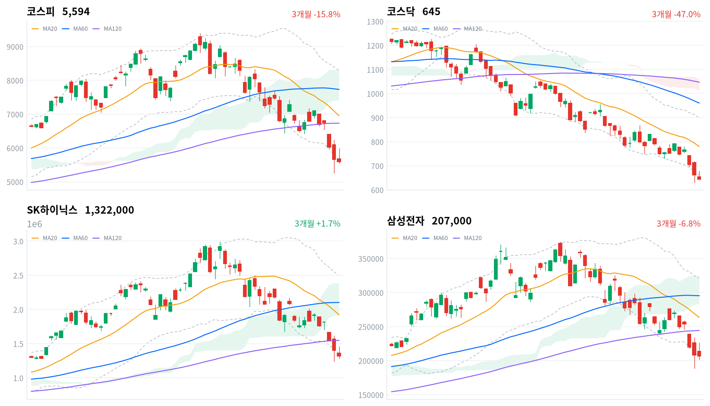

코스피는 개장 직후 5681.77에서 출발해 오전 11시경 5976.82까지 치솟았다가 오후 개인 매도세에 밀려 저가 5547.41까지 반납한 뒤 5593.56(-1.23%)으로 마감했다. 코스닥은 644.78(-2.70%)로 낙폭이 더 컸다. 전일(7/29) 사상 첫 이틀 연속 서킷브레이커·코스피 -5.98% 폭락의 여진이 이어지는 흐름이었고, 간밤 다우 -2.2%·나스닥 -1.7%·마이크론 -10.1%로 대변되는 미국발 반도체 심리 위축이 개장 전부터 부담으로 작용했다.
수급을 뜯어보면 표면적 지수 하락과 자금 흐름이 어긋난다. 외국인은 코스피에서 13,280억원, 코스닥에서 2,483억원을 순매수했고(모두 당일 잠정) 프로그램 비차익 매매도 코스피 +13,546억원·코스닥 +2,303억원으로 같은 방향을 가리켰다.
그럼에도 지수가 밀린 이유는 개인이 코스피 -14,309억원·코스닥 -1,108억원(모두 당일 잠정) 순매도로 오후 상승분을 되돌렸기 때문이다. 업종 단위로 보면 더 뚜렷해지는데, kr_industry.json이 추적하는 60개 업종 중 48개가 상승했고 손해보험(+4.70%)·은행(+3.07%) 등은 종목 폭도 넓은 진짜 주도였던 반면, 지수 하락은 SK하이닉스(20일선 대비 -31.3%)·삼성전자(-21.5%) 두 반도체 대형주의 낙폭에 집중된 결과다 — 헤드라인 낙폭만 보면 시장 전체가 팔렸다고 오해하기 쉽지만 실제로는 소수 대형주 조정과 광범위한 순환매가 동시에 벌어진 하루였다.
다음 확인 지점은 두 갈래다. 기술적으로는 코스피가 볼린저 하단(5624.03)을 이미 하회했고 삼성전자는 자체 하단(205,806원)에 걸려 있어, 이 레벨의 회복 여부가 단기 반등의 1차 신호이고 반대로 오늘 저가(코스피 5547.41·삼성전자 205,806원대)가 재차 깨지면 20일 스윙 저점(코스피 5262.77·삼성전자 189,200원)이 다음 방어선이 된다.
정책 변수로는 미국 301조 '과잉생산' 조사 결론 시점이 미확정인 채 반도체·2차전지 관세 리스크로 남아 있고, 국고채 3년물이 기준금리 대비 이미 133bp 높게 형성돼 있어 8월27일 금통위의 추가 인상 기대를 시장이 상당폭 선반영하고 있다는 점도 함께 지켜봐야 한다.
| 지수 | 종가 | 등락률 | 일중 고가 | 일중 저가 |
|---|---|---|---|---|
| 코스피 | 5,593.56 | -1.23% | 5,976.82 | 5,547.41 |
| 코스닥 | 644.78 | -2.70% | — | — |
코스닥은 장중 30분봉·고저 데이터가 수집되지 않아 종가·등락률만 표기.
코스피는 09시 5700.63으로 출발해 10시 5672.44까지 밀렸다가 10시30분 5836.39, 11시 5928.66으로 반등폭을 키우며 이날 고점 5976.82(오전 11시경)까지 치솟았다. 이후 11시30분 5776.08, 12시 5657.44로 상승분을 빠르게 반납했고, 오후 들어서도 13시30분 5666.76까지 반짝 반등한 것을 제외하면 14시 5588.21, 14시30분 5585.51 등 좁은 박스권에서 밀리는 흐름이 이어지며 저가 5547.41을 기록했다.
종가는 15시32분 5593.56으로, 개인 매도가 강해진 오후 구간의 낙폭을 대부분 지킨 채 마감했다.
전일(7/29) 코스피 -5.98%·코스닥 -6.12%로 양대 지수가 사상 최초로 이틀 연속 서킷브레이커를 발동한 폭락의 여진이 이날 변동성의 배경이다(전자신문, 헤럴드경제). 간밤 미국 증시에서도 다우 -2.2%·S&P500 -1.5%·나스닥 -1.7%가 나왔고 마이크론이 HBM 가격 조정·빅테크 발주 지속성 우려로 -10.1% 급락하며 국내 반도체 심리를 개장 전부터 눌렀다(헤럴드경제).
외국인은 7월 한 달간 유가증권+코스닥에서 17조9,055억원을 순매도했는데, 반도체 대형주에 쏠렸던 자금이 되돌려지며 조정 국면에서 지수 하락을 증폭시키는 구조가 노출됐다는 평가다(헤럴드경제).

코스피·코스닥·SK하이닉스·삼성전자 3개월 일봉 캔들에 이동평균 20·60·120일선, 볼린저밴드, 일목균형표 구름대를 오버레이. 상승 녹색·하락 적색.
코스피는 5593.56으로 마감해 볼린저 하단(5624.03)을 이미 하회했고 %b -0.011로 밴드 바깥에 위치한다. 20·60·120일 이동평균이 각각 6955.66·7732.54·6734.14로 뒤섞여 있어(MA60>MA20>MA120) 정배열도 역배열도 아닌 혼조 상태이며, 일목구름(상단 8304.87·하단 7405.02) 아래에서 거래돼 중장기 추세는 여전히 하락 우위다. 반등 조건은 볼린저 하단 5624.03의 재돌파이며 이를 회복하면 전환선 6214.39, 이어 20일선 6955.66이 다음 저항으로 대기하고 있다. 반대로 오늘 저가 5547.41이 재차 무너지면 20일 스윙 저점 5262.77이 다음 지지선이자 이번 조정의 최후 방어선이 된다.
코스닥은 644.78로 마감해 20·60·120일선(780.26·960.59·1047.20)이 순서대로 낮아지는 뚜렷한 역배열 상태이고, 볼린저 하단 661.68도 이미 이탈해(%b -0.071) 코스피보다 기술적으로 더 약한 그림이다. 구름대(상단 1060.47·하단 1010.62) 아래에서 거래되는 만큼 반등은 우선 볼린저 하단 661.68 회복이 1차 신호이며, 이를 넘어서면 전환선 710.64·20일선 780.26이 순차 저항이다. 하락 시에는 20일·60일 스윙 저점이 겹치는 630.99가 최후 지지선으로, 이 레벨 이탈은 추가 하락 압력을 뜻한다.
SK하이닉스는 1,322,000원으로 마감해 20일선(1,923,850원) 대비 -31.28%, 60일선 대비 -37.12% 괴리를 보이며 4종 중 가장 깊은 조정을 겪고 있다. 볼린저 하단 1,353,816원도 이미 하회한 상태(%b -0.028)이고 일목구름(상단 2,385,000원·하단 1,916,500원)과의 거리도 크다. 반등 트리거는 볼린저 하단 1,353,816원 회복이며 이를 넘어서면 전환선 1,626,000원, 20일선 1,923,850원이 차례로 저항이 된다. 하락이 이어질 경우 20일·60일 스윙 저점이 겹치는 1,246,000원이 최후 지지선이다.
삼성전자는 207,000원으로 마감해 볼린저 하단(205,806원) 바로 위, %b 0.01로 4종 중 밴드 하단에 가장 근접해 있어 단기 과매도 신호가 가장 뚜렷하다. 20일선(263,725원) 대비 -21.51%, 일목구름(상단 324,625원·하단 283,450원) 아래에서 거래되는 점은 여전히 하락 추세임을 시사한다. 반등은 전환선 232,600원 회복이 1차 신호이고, 이를 넘어서면 기준선 275,850원·20일선 263,725원이 저항으로 남는다. 하락 시에는 볼린저 하단 205,806원 이탈에 이어 20일·60일 스윙 저점이 겹치는 189,200원이 최후 지지선이다.
위 레벨은 kr_technical.json의 기계적 계산값(이동평균·볼린저밴드·일목균형표·스윙 고저)이며 투자권유가 아니다.
kr_market_data.json 기준 코스피·코스닥 모두 flows_date 2026-07-30, provisional=true — 아래 수치는 모두 당일 잠정치다.
| 주체 | 순매수 |
|---|---|
| 개인 | -14,309 |
| 외국인 | +13,280 |
| 기관 | +805 |
| 주체 | 순매수 |
|---|---|
| 개인 | -1,108 |
| 외국인 | +2,483 |
| 기관 | -1,435 |
외국인은 코스피·코스닥 모두 순매수(각각 당일 잠정 +13,280억원·+2,483억원)를 기록했지만 두 지수 모두 하락 마감했다. 방향을 가른 것은 개인으로, 코스피 -14,309억원·코스닥 -1,108억원(모두 당일 잠정) 순매도가 장중 고점 이후의 반납을 만든 주된 힘이다. 기관은 코스피에서 소폭 순매수(+805억원)했지만 코스닥에서는 순매도(-1,435억원)로 엇갈렸다.
| 코스피 | 순매수(억원) |
|---|---|
| 차익 | -1,425 |
| 비차익 | +13,546 |
| 전체 | +12,121 |
| 코스닥 | 순매수(억원) |
|---|---|
| 차익 | +69 |
| 비차익 | +2,303 |
| 전체 | +2,372 |
방향성 성격의 비차익 매매가 코스피 +13,546억원·코스닥 +2,303억원으로 순매수를 기록해, 같은 날 외국인 현물 순매수(코스피 +13,280억원·코스닥 +2,483억원, 모두 당일 잠정)와 방향·규모 모두 상당히 근접했다. 선물 연계 기계적 매매인 차익거래는 코스피에서 -1,425억원으로 소폭 순매도였고 코스닥에서는 +69억원으로 미미해, 오늘 프로그램 매매의 순매수 흐름은 재정거래보다 방향성 바스켓 매수에서 비롯됐다고 볼 수 있다.
결국 외국인·기관·프로그램 비차익 매매가 모두 순매수 쪽에 정렬돼 있었는데도 지수가 하락한 것은, 개인의 대규모 매도가 장중 고점 이후 상승분을 되돌린 결과로 해석하는 편이 데이터와 더 정합적이다.
| 종목/ETF | 구분 | 거래대금 |
|---|---|---|
| SK하이닉스 | 종목 | 12조 4,934억원 |
| 삼성전자 | 종목 | 9조 8,020억원 |
| SK하이닉스 인버스 | 인버스(숏) | 5조 123억원 |
| SK하이닉스 레버리지 | 레버리지(롱) | 4조 9,184억원 |
| 삼성전자 레버리지 | 레버리지(롱) | 1조 9,558억원 |
| 삼성전자우 | 종목 | 8,644억원 |
| TIGER 반도체TOP10 | 테마ETF | 7,839억원 |
| SOL AI반도체TOP2플러스 | 테마ETF | 4,958억원 |
| 삼성전자 인버스 | 인버스(숏) | 4,908억원 |
| KODEX AI반도체TOP2플러스 | 테마ETF | 3,619억원 |
같은 기초자산 ETF를 방향별로 묶고 지수·해외 ETF 제외. 단위 백만원 원본을 억원으로 환산. 코스피200·코스닥150 추종 지수 ETF와 그 레버리지·인버스는 정규화 단계에서 제외돼 표에 없음.
SK하이닉스는 거래대금 1위(12조 4,934억원)로 삼성전자(9조 8,020억원)를 웃돌며 이틀째 매도 압력의 중심에 섰다. 개인 투자자의 방향성 베팅도 팽팽한데, SK하이닉스 인버스(숏) 거래대금이 5조 123억원으로 레버리지(롱) 4조 9,184억원을 소폭 웃돌아 단기적으로는 하락 베팅이 근소하게 더 많았다. 삼성전자는 반대로 레버리지(롱) 1조 9,558억원이 인버스(숏) 4,908억원을 크게 앞서, 같은 반도체 대형주라도 개인 심리는 종목별로 엇갈렸다.
위 표는 kr_sector.html 원본 스니펫(12개 대분류 섹터, 1D~1Y 수익률).
1D 기준 반도체 섹터가 -4.74%로 가장 부진했고 로봇(-3.47%)·건설(-1.64%)이 뒤를 이었다. 반면 조선(+4.01%)·방산(+3.96%)·2차전지(+3.79%)·철강소재(+2.70%)·은행(+2.38%)이 상승을 이끌어, 위 스니펫만 보면 반도체 한 섹터의 급락이 지수 하락의 상당 부분을 설명한다.
더 세분화된 kr_industry.json의 업종별 breadth로 교차 검증하면 그림이 더 뚜렷해진다. 60개 업종 중 48개가 상승했고, 이 중 손해보험(+4.70%, breadth 0.917)·은행(+3.07%, breadth 0.818)·가스유틸리티(+2.57%, breadth 0.833)·부동산(+1.82%, breadth 0.71) 등은 종목 대부분이 함께 오른 폭넓은 상승 주도였다.
반면 오늘 등락률 1위였던 조선(+5.00%)은 breadth 0.6(30개 중 18개 상승)으로 상승률 대비 폭이 좁은 개별종목 장세였고, 게임엔터테인먼트(+3.96%, breadth 0.529)·우주항공과국방(+3.90%, breadth 0.485)도 마찬가지로 상승률만으로는 업종 전체가 주도했다고 보기 어렵다. 하락 업종은 IT서비스(-1.06%)·컴퓨터와주변기기(-0.74%)·소프트웨어(-0.48%) 등 12개에 그쳐, 지수 하락의 실체는 업종 전반의 약세가 아니라 반도체 대형주 두 종목에 쏠린 조정이었음을 다시 확인해준다.
SK하이닉스는 거래대금 1위(12조 4,934억원)를 기록하며 이틀째 매물 출회의 중심에 섰다. 20일선 대비 -31.3% 괴리, 볼린저 하단 이탈, 일목구름 하단 아래라는 기술적 약세가 겹쳤고, 최근 HBM 증설·가격 조정 우려와 빅테크 발주 지속성에 대한 불확실성이 매도의 배경으로 거론된다.
삼성전자는 거래대금 2위(9조 8,020억원)로 SK하이닉스보다 낙폭은 작지만 20일선 대비 -21.5% 괴리, 볼린저 %b 0.01로 하단권에 근접했다. 1분기 D램 시장 1위 탈환·HBM4 추격 등 펀더멘털 뉴스 자체는 유효하지만, 반도체 업종 전반의 밸류에이션 되돌림 압력이 더 크게 작용하는 국면이다.
업종 순환매의 수혜주로는 손해보험(+4.70%, 폭넓은 상승)·은행(+3.07%, 폭넓은 상승)이 꼽히고, 조선(+5.00%)은 등락률은 가장 높았지만 breadth 0.6의 개별종목 장세였다는 점을 함께 봐야 한다. 개인 투자자의 단기 방향성 심리는 SK하이닉스 레버리지·인버스 ETF 거래대금이 각각 4조 9,184억원·5조 123억원으로 나란히 거래대금 상위 4·3위에 오른 데서도 드러난다.
원/달러 환율은 kr/data 파이프라인에 수치 소스가 없어 구체적 레벨을 표기하지 않는다. 다만 외국인의 반도체 대형주 순매도 기조와 한국은행의 8월 추가 인상 기대가 원화 약세 압력으로 작용할 개연성은 정성적으로 짚어둘 만하다.
| 지표 | 금리 | 전일比(bp) | 기준일 |
|---|---|---|---|
| 국고채 3년 | 3.831% | +3.1 | 2026-07-30 |
| 국고채 10년 | 4.311% | +5.4 | 2026-07-30 |
| CD 91일 | 2.93% | +1.0 | 2026-07-30 |
| 회사채 AA- 3년 | 4.541% | +2.9 | 2026-07-30 |
| 한국은행 기준금리 | 2.50% | 0.0 | 2026-06 |
출처: ECOS(한국은행 경제통계시스템). 기준금리는 월별 통계로 6월 기준(전월 대비 변동 없음)이며, 나머지는 모두 2026-07-30 기준.
국고채 10년(4.311%, +5.4bp)이 3년(3.831%, +3.1bp)보다 더 큰 폭으로 올라 장기물이 상대적으로 더 밀리는 약보합 커브가 하루 더 이어졌다. 3년-10년 스프레드는 48bp로 정상 우상향을 유지했지만, 국고채 3년물이 6월 기준 기준금리(2.50%)보다 이미 133bp 높게 형성돼 있어 8월27일 금통위의 추가 인상 기대를 시장이 상당폭 선반영하고 있다는 해석이 가능하다.
다만 ECOS의 기준금리 통계 자체는 아직 6월 값(2.50%, 전월 대비 변동 없음)에 머물러 있어, 만약 그사이 실제 인상이 있었다면 통계 반영에는 시차가 있을 수 있다는 점을 함께 감안해야 한다.
회사채 AA- 3년(4.541%, +2.9bp)과 국고채 3년의 신용스프레드는 71bp로, 국고채보다 오히려 소폭 덜 오르며 스프레드가 미세하게 좁혀졌다. 코스피·코스닥이 3거래일 연속 흔들리는 와중에도 회사채 시장에서 뚜렷한 신용경계감 확대 신호는 보이지 않는다는 뜻이다. CD 91일물(2.93%, +1.0bp)도 큰 변화 없이 안정적이어서, 오늘의 주식시장 변동성이 단기 자금시장으로까지는 번지지 않은 모습이다.
미국 무역대표부(USTR)는 7월23일(현지시간) 강제노동 관련 상품 차단이 미흡한 60개 경제권에 10~12.5%의 추가 관세를 부과하기로 했고, 한국도 대상에 포함돼 기존 MFN 관세와 합산하면 최소 12.5%가 적용된다. 동시에 한국을 포함한 16개 경제권을 대상으로 한 '과잉생산' 관련 301조 조사도 진행 중이다(파이낸셜뉴스).
이 조치가 주가에 닿는 경로는 이익단이다. 대미 수출 마진이 눌리는 구조로, 반도체·배터리·조선이 표적으로 거론되며 '과잉생산' 관세가 최종 확정되면 한미 합의 상한 15%를 실제로 초과할 리스크가 생겨 대미 수출 기업의 실적 눈높이가 낮아질 수 있다.
이론적 피해 구간은 반도체·2차전지·조선 등 대미 수출 비중이 큰 업종이다. 그런데 오늘 데이터에서는 조선이 오히려 +5.00%로 강세를 보였는데, 이는 breadth 0.6의 좁은 상승이라는 점을 감안해도 관세 리스크가 아직 조선 주가에 반영되지 않았거나 다른 재료(중동 지정학 등)가 이를 상쇄한 것으로 판정할 수 있다. 반도체는 관세보다 HBM 수요·밸류에이션 되돌림이 오늘 매도의 더 직접적인 사유로 보인다.
'과잉생산' 301조 조사의 최종 결론 시점은 일정 미확정이다. 미국 정부의 조사 완료·관세율 확정 발표가 다음 확인 지점이며, 한미 합의 상한 15% 사수 여부가 반도체·2차전지 밸류에이션의 다음 트리거가 될 전망이다.
직전 금통위에서 기준금리를 2.50%에서 2.75%로 0.25%p 인상했다고 보도되며, 다음 통화정책방향 결정회의는 8월27일로 예정돼 있다. '깜짝 성장'과 7월 소비자물가 상승률에 따라 연속 인상 가능성이 거론되고 있다(전자신문, 파이낸셜뉴스). 다만 ECOS 공식 통계상 기준금리는 아직 6월 값(2.50%, 전월 대비 변동 없음)으로 표시돼 있어, 보도된 인상분이 공식 통계에 아직 반영되지 않았을 가능성을 함께 감안해야 한다.
이 재료가 주가에 닿는 경로는 유동성과 수급 두 갈래다. 할인율 상승은 성장주 멀티플을 압박하고, 동시에 채권-주식 간 자금 재배분을 유발한다. 오늘 국고채 3년물이 6월 기준 기준금리 대비 이미 133bp 높게 형성돼 있는 것은 시장이 8월 인상을 상당폭 선반영하고 있다는 신호로 읽을 수 있다.
수혜 구간은 순이자마진 확대 기대가 있는 은행(오늘 +3.07%, breadth 0.818로 폭넓은 상승)과 손해보험(+4.70%)으로, 오늘의 방어주 순환매 방향과 정합적이다. 반대로 밸류에이션 부담이 큰 반도체·성장주는 할인율 상승 시 추가 조정 압력을 받는데, 오늘 SK하이닉스·삼성전자의 약세 방향과도 일치한다.
8월27일 금통위 이전에 발표될 7월 소비자물가지수가 1차 확인 지점이다. 발표일은 일정 미확정이나 통상 익월 초에 나온다.
2026년 2월25일 국회 본회의를 통과한 자사주 소각 의무화 상법 개정안이 공포와 동시에 시행 중이다. 기존 보유 자사주는 시행일로부터 6개월 유예 후 1년 내 소각해야 해 최대 1년6개월 내 처리 의무가 있다. 이사 충실의무 확대(1차 개정)는 이미 시행됐고, 독립이사·감사위원 의결권 제한 등 2차 개정 후속 조치는 7월23일부터 적용됐다(법률신문).
전달 경로는 멀티플이다. 자사주가 의무 소각되면 유통주식수가 줄어 EPS·주주환원이 개선되는 구조로, 거버넌스 할인이 축소될 여지가 생긴다. 자사주 보유 비중이 컸던 금융지주 등에서 처분보다 소각을 우선하는 흐름이 확인되고 있다.
이론적 수혜 구간은 자사주 비중이 높은 은행·금융지주다. 오늘 은행 업종의 폭넓은 강세(+3.07%, breadth 0.818)는 방향은 정합하지만, 오늘 상승의 더 직접적인 동인은 금리 인상 기대·방어주 매력으로 보이며 거버넌스 재료는 이미 부분적으로 선반영된 배경 재료로 판정하는 것이 적절하다.
3차 개정 시행일 기준 유예기간 만료 시점(6개월 뒤)이 실제 소각 집행 여부를 확인할 수 있는 트리거다. 개별 기업 공시를 지켜봐야 하는 계류 중인 이슈다.
2026년 1월1일 이후 지급되는 배당소득부터 3년 한시(~2028년) 분리과세가 적용된다. 배당성향 40% 이상, 또는 25% 이상이면서 전년 대비 배당이 늘어난 상장사가 대상이며 세율은 22~38.5%다(KB의 생각).
전달 경로는 수급과 멀티플이다. 고배당·고금융소득 개인투자자의 배당주 선호를 유인하는 수급 경로와, 배당 매력이 부각되며 밸류에이션 프리미엄이 붙는 멀티플 경로가 함께 작동한다.
이론적 수혜 구간은 은행·보험 등 고배당 금융주다. 오늘 손해보험(+4.70%)·은행(+3.07%) 강세는 방향은 정합하나, 앞선 금리 인상 기대·상법 개정 재료와 마찬가지로 오늘 하루의 직접 동인이라기보다 배경으로 겹쳐 있는 재료로 판단하는 편이 정확하다.
결산배당 시즌(연말~익년 초) 배당 확정 공시가 실제 수급 유입을 확인할 수 있는 지점으로, 현재는 계류 중인 정책으로 남아 있다.
MSCI가 6월23일(현지시간) 발표한 2026년 연례 시장분류 리뷰에서 한국을 선진국지수 관찰대상국(워치리스트)에도 올리지 않아 12수째 편입이 불발됐다. 역외 원화 환전 제한성이 핵심 제약 요인으로 지목됐다(머니투데이, KB의 생각).
전달 경로는 수급과 멀티플이다. 신흥국 지수에 잔류하며 패시브 자금의 구조적 유입에 한계가 생기고, 외국인 변동성이 확대되는 수급 경로와 함께 선진국 프리미엄이 반영되지 않으며 코리아 디스카운트가 지속되는 멀티플 경로가 함께 작동한다.
특정 업종보다는 지수 전체의 수급 변동성에 영향을 미치는 구조적 재료다. 오늘 외국인이 반도체 대형주에 매도를 집중시키고 개장 후 급등분을 오후 들어 반납한 패턴은 '신흥국 자금 변동성 확대'라는 프레임과 정합적이다.
다음 MSCI 연례 리뷰(2027년 상반기)까지는 일정 미확정인 구조적 이슈로 남는다. 단기로는 역외 원화 유동성 개선 조치와 관련한 정부·당국의 발표 여부가 확인 지점이다.